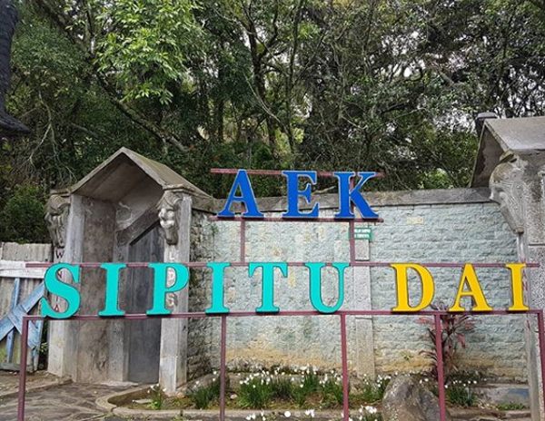
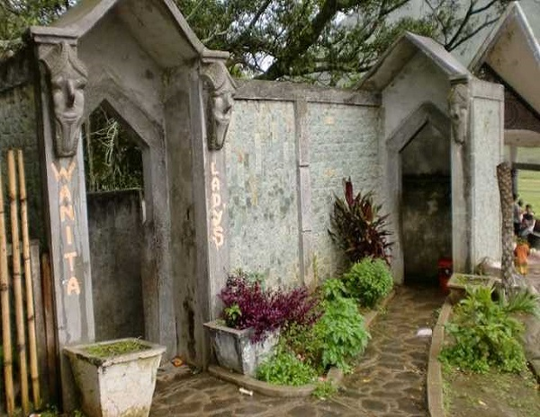
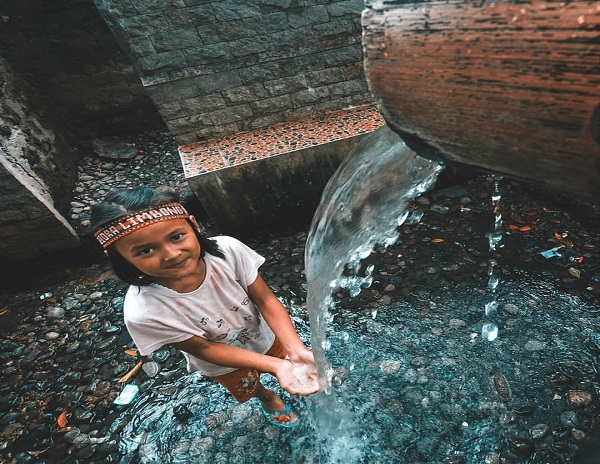

Morrisville, VT 05661
Legenda Aek Sipitu Dai



Legenda Aek Sipitu Dai
Munculnya Air tujuh rasa (aek sipitu dai) bermulai dari sebuah kisah Ompung Langgat Limbong yang mana adalah generasi ke dua dari marga Limbong, saat itu sedang mengalami kesusahan. Ia sedang dilanda kehausan yang luar biasa, dan malangnya dia sangat sulit untuk menemukan air.
Ia terus mencari mata air ke sana kemari, namun tidak kunjung satu pun yang menghasilkan air. Ompung Langgat Limbong telah mencapai batasan kehausan dan kelelahannya, hingga akhirnya ia berhenti di suatu tempat, lalu ia berdoa kepada Sang Maha Kuasa agar ia bisa diberikan pertolongan.
Setelah ia berdoa lantas ia menancapkan sebuah tongkat ke permukaan tanah berkali-kali hingga tujuh kali banyaknya. Dan tak lama kemudian, lubang bekas tancapan tongkat dari sang Ompung Langgat Limbong mengeluarkan air. Luar biasanya, air yang keluar dari setiap lubang memiliki rasa yang berbeda. Namun, cerita ini berbeda dari kisah yang disampaikan oleh Santun Sagala (39), petugas Pariwisata Samosir yang menjaga cagar budaya ini.
Menurutnya, mata air yang berada persis di kaki bukit Pusuk Buhit ini adalah karya alam. Sagala menyebut, jika air tersebut pertama kali ditemukan oleh Siboru Pareme, generasi ke tiga dari silsilah Si Raja Batak. Si Raja Batak sendiri memiliki dua keturunan yakni, Guru Tatea Bulan dan Raja Isumbaon. Oleh Si Raja Batak, Pusuk Buhit yang juga diyakini tempat lahirnya Si Raja Batak, dibagi Pusuk Buhit menjadi dua bagian. Satu bagian menjadi milik Raja Tatea Bulan, termasuk lokasi Aek Sipitu Dai, sedangkan sebagian lagi menjadi milik Raja Isumbaon.
Kemudian, Raja Tatea Bulan memiliki 10 keturunan. Kelima putranya bernama Siraja Uti, Saribu Raja, Limbong Mulana, Sagala Raja, dan Silau Raja. Sedangkan lima putrinya bernama Sibiding Laut, Siboru Pareme, Pinta Haumasan, Pungga Haumasan dan Nantinjo. Saribu Raja dan Siboru Pareme diyakini adalah saudara kembar.
Semasa hidupnya, Saribu Raja sendiri diyakini adalah seorang seorang seniman. Melihat pekerjaan saudaranya yang terbilang santai dan hanya duduk di satu tempat, maka Si Boru Pareme selalu menjadi pelayannya, menyediakan makanan dan minumannya.
Karena kedekatan itu, kedua saudara kembar ini diyakini melakukan hubungan incest hingga Si Boru Pareme hamil. Mengetahui Si Boru Pareme telah hamil, keempat saudara laki-lakinya yang lain kemudian berunding tanpa diketahui oleh Saribu Raja. Keempat saudaranya ini kemudian meyakini jika saudari mereka hamil karena Si Saribu Raja.
Mereka kemudian sepakat untuk mengusir saudaranya itu dari kampung. Sejak itulah, Saribu Raja pergi meninggalkan Pusuk Buhit dan pindah ke Barus, Tapanuli Tengah. Sementara, Si Boru Pareme pergi ke Ulu Darat di Humbang Hasundutan. Di Ulu Darat, Si Boru Pareme disambut oleh Babiat Sitelpang (Harimau Berkaki Tiga). Bahkan, Babiat Sitelpang tersebutlah yang merawat dan menghidupi Si Boru Pareme hingga ia melahirkan putranya yang bernama Si Raja Lontung. Setelah Si Raja Lontung dewasa, ia pun menanyakan silsilah keluarganya kepada ibunya, termasuk menanyakan tulang-nya (paman).
Mendengar pertanyaan itu, Siboru Pareme kemudian mengatakan jika tulang-nya ada di Pusuk Buhit. Si Boru Pareme kemudian menyuruh anaknya pergi ke Pusuk Buhit untuk mencari paribannya (putri paman) untuk dijadikan istrinya. Saat itu, Si Boru Pareme mengatakan kepada anaknya, bahwa di Pusuk Buhit ada air yang memiliki tujuh rasa. Di Air Tujuh Rasa itulah anaknya akan menemukan paribannya yang kelak akan menjadi istrinya.
Bahkan saat itu, ibunya memberikan cincin kepeda Si Raja Lontung. Cincin itulah yang disebut sebagai tanda pengenal kepada paribannya nanti. Kepada anaknya, Si Boru Pareme berpesan, jika ia menemukan wanita di Aek Sipitu Dai, dan cincin yang diberikan cocok ke jari manis wanita itu, maka itulah paribannya yang kelak kemudian menjadi istrinya.
Mendengar pesan dan nasihat ibunya, Si Raja Lontong lalu berangkat ke Pusuk Buhit mencari Aek Sipitu Dai yang ia maksud. Setelah menemukan Aek Sipitu Dai itu, Siraja Lontung mendapati wanita yang membelakanginya di sana. Kepada si wanita itu, Si Raja Lontung berkata bahwa ia sedang mencari paribannya, dan memberikan cincin itu sebagai pertanda. Wanita itu lalu menerima cincin itu dan memakainya.
Dan Benar saja, cincin itu ternyata cocok dengan wanita tersebut. Namun setelah wanita itu membalikkan tubuh dan menatapnya, dia kaget karena ternyata wanita itu adalah ibunya sendiri, Si Boru Pareme.
Si Boru Pareme lalu menceritakan soal masa lalunya kepada anaknya, namun karena anaknya tidak memiliki pariban, ia takut anaknya tidak akan menikah. Karena itu dia memerintahkan anaknya untuk mencari paribannya dan memberikan cincinnya sebagai penanda. Sejak itulah, Si Raja Lontung akhirnya mempersunting ibunya dan mereka memiliki tujuh keturunan yakni Sinaga, Situmorang, Pandiangan, Aritonang, Simatupang, Nainggolan dan Siregar, yang kemudian terus berketurunan hingga saat ini nama ketujuh keturunannya menjadi marga dalam silsilah Batak. Oleh Siraja Lontung, mata air tempat pertemuannya dengan ibu yang kemudian menjadi istrinya itu dibagi menjadi 7 pancuran yang peruntukannya berbeda-beda yakni:
“Jadi mata air ini adalah karya alam. Namun mata air ini menjadi sejarah pertemuan antara Si Raja Lontung dengan ibunya, yakni Si Boru Pareme yang kemudian menjadi istrinya,” ujar Sagala. “Dari keturunan mereka juga lahir sebagian marga-marga Batak yang ada saat ini,” sebut Santun menutup cerita tengang filosofi Aek Sipitu Dai.
“Jadi mata air ini adalah karya alam. Namun mata air ini menjadi sejarah pertemuan antara Si Raja Lontung dengan ibunya, yakni Si Boru Pareme yang kemudian menjadi istrinya,” ujar Sagala. “Dari keturunan mereka juga lahir sebagian marga-marga Batak yang ada saat ini,” sebut Santun menutup cerita tengang filosofi Aek Sipitu Dai.
Features
Reviews

Donec nec tristique sapien. Aliquam ante felis, sagittis sodales diam sollicitudin, dapibus semper turpis

Vestibulum vel est massa. Integer pellentesque non augue et accumsan. Maecenas molestie elit nibh, vel vestibulum leo condimentum quis. Duis ac orci a magna auctor vehicula.